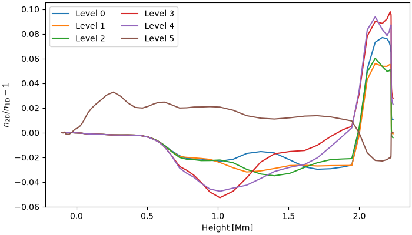

Note
Go to the end to download the full example code.
NLTE Ca II in a 2D slab with periodic boundaries
Lightweaver can solve the NLTE problem in two dimensions. Here we construct a horizontally homogeneous 2D slab from the FAL C model, with periodic horizontal boundaries, solve for the Ca II populations, and compare against the equivalent plane-parallel (1D) solution. Any differences come from the different angular quadratures and the numerics of the 2D formal solver.
import matplotlib.pyplot as plt
import numpy as np
import lightweaver as lw
from lightweaver.fal import Falc82
from lightweaver.rh_atoms import CaII_atom, H_6_atom
Solve for Ca II in statistical equilibrium (H is treated in LTE as a background species).
def converged_ca(atmos):
rad_set = lw.RadiativeSet([H_6_atom(), CaII_atom()])
rad_set.set_active('Ca')
spect = rad_set.compute_wavelength_grid()
eq_pops = rad_set.compute_eq_pops(atmos)
ctx = lw.Context(atmos, spect, eq_pops, Nthreads=2)
lw.iterate_ctx_se(ctx, quiet=True)
return eq_pops, ctx
2D atmospheres are defined on a geometric height grid, with every quantity provided as a [z, x] array. Here each of the 8 columns is a copy of FAL C, and the x boundaries are periodic. This uses the 6 rays/octant quadrature of Štěpán et al 2020
fal = Falc82()
Nx = 8
def tile(a):
return np.ascontiguousarray(np.repeat(np.asarray(a)[:, None], Nx, axis=1))
x = np.arange(Nx) * 50e3
zero = np.zeros((fal.Nspace, Nx))
atmos_2d = lw.Atmosphere.make_2d(
height=np.copy(fal.z),
x=x,
temperature=tile(fal.temperature),
vx=zero,
vz=zero,
vturb=tile(fal.vturb),
ne=tile(fal.ne),
nh_tot=tile(fal.nh_tot),
x_lower_bc=lw.PeriodicRadiation(),
x_upper_bc=lw.PeriodicRadiation(),
)
atmos_2d.quadrature(6)
eq_pops_2d, ctx_2d = converged_ca(atmos_2d)
The plane-parallel solution for comparison.
atmos_1d = Falc82()
atmos_1d.quadrature(5)
eq_pops_1d, ctx_1d = converged_ca(atmos_1d)
The spatial axis of 2D results is flattened in [z, x] order, so reshape to [level, z, x] and take a central column.
Nz = atmos_2d.Nz
ca_2d = np.asarray(eq_pops_2d['Ca']).reshape(-1, Nz, Nx)
column = ca_2d[:, :, Nx // 2]
ca_1d = np.asarray(eq_pops_1d['Ca'])
Plot the relative difference between the 2D column and the 1D solution for each Ca II level. They agree fairly well, with differences mostly originating from the angular quadrature (and different formal solver).
z_mm = np.asarray(fal.z) / 1e6
fig, ax = plt.subplots(figsize=(7, 4), constrained_layout=True)
for i in range(ca_1d.shape[0]):
ax.plot(z_mm, column[i] / ca_1d[i] - 1.0, label=f'Level {i}')
ax.set_xlabel('Height [Mm]')
ax.set_ylabel(r'$n_{\rm 2D} / n_{\rm 1D} - 1$')
ax.legend(ncol=2)
plt.show()

Total running time of the script: (0 minutes 56.590 seconds)